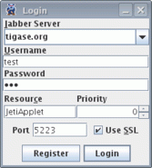
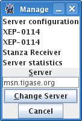
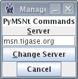
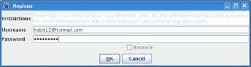
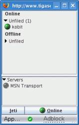

Artur Hefczyc <artur.hefczyc@tigase.net> v2.0, June 2014: Reformatted for AsciiDoc. :toc: :numbered: :website: http://tigase.net :Date: 2009-11-25 15:51
Make sure you are not connected to the Tigase server account with another Jabber client at the same time as this may affect your transport configuration.
Jeti is available on Tigase website, preinstalled and preconfigured. You can run it by clicking on this link. Enter you user name and password to login. In my case this is test and *\**. Click *Login* and go to next page…

You are now logged in. You may see some contacts on the buddy list or an empty list if you have no contacts. You can add somebody or just start chatting, but in this guide we will focus on the MSN transport configuration.
Now click the Jeti button and select Manage Services menu option…

As a result you will get the windows with all tigase.org services.

This version of Jeti client doesn’t support service browsing yet so you have to enter the correct address of MSN transport: msn.tigase.org.
Click Change server and you will get to another window which looks like this one.

Now single click on the PyMSNt Commands text to open another window where you have to enter you MSN user name and password.

Make sure you enter your full MSN account name here including the hotmail.com part or any other domain name you use for you MSN account.
Now click OK.
Well, you clicked OK and nothing really happened. The main Jeti windows looks just as it looked before, the same. Possibly empty buddy list, and no track of MSN transport. Unfortunately this Jeti version doesn’t refresh the transport list properly and you have to re-login to see the transport. Jeti’s author is aware of this problem and it will be addressed in next release.
So please close the Jeti window and start the application again entering you Tigase user name and password.

As you can see the MSN transport is available now but it is grayed out, which means you are not logged into the MSN service.
To activate (login) to the MSN service, right click on the MSN Transport to get connect menu. Select Log On…

If everything was entered correctly, and if the MSN service is available, you should be logged into the transport and it should show in green color. All of your MSN contacts should be automatically pulled into your application.
For the Jabber client, there is now no difference between MSN contacts and Jabber contacts. So, you can simply continue to use Jeti or close it and login with another Jabber client.

You can now communicate with all people regardless if they are available through XMPP or MSN.